Chapter 8 · Part 1 — The Knight
Water filled Jack’s nose and covered his head. His glasses fell off. He grabbed them just in time. He coughed and flailed his arms.
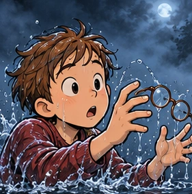
“Jack!” Annie was calling from above.
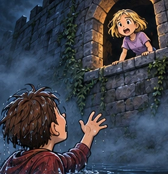
“I’m in … the moat!” said Jack, gasping for air. He tried to tread water and put his glasses back on. With his backpack, his shoes, and his heavy clothes, he could hardly stay afloat.
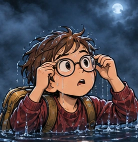
SPLASH!
“Hi! I’m here!” Annie sputtered.
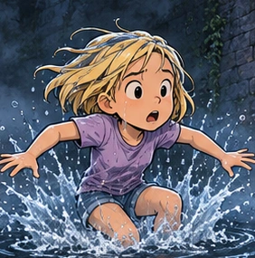
Jack could hear her nearby. But he couldn’t see her.
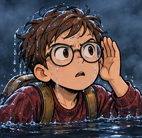
“Which way’s land?” Annie asked.
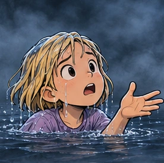
“I don’t know! Just swim!”
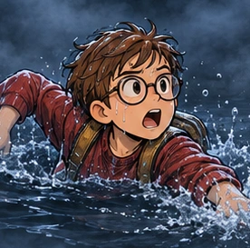
Jack dog-paddled through the cold black water.
He heard Annie swimming, too. At first it seemed as if she was swimming in front of him. But then he heard a splash behind him.
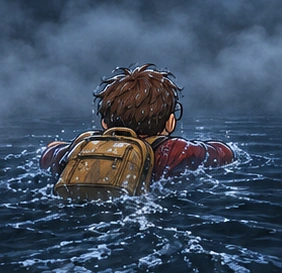
“Annie?” he called.
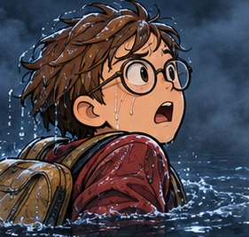
“What?” Her voice came from in front. Not behind.
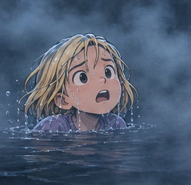
Another splash. Behind.
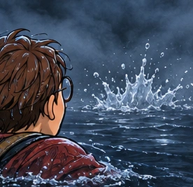
Jack’s heart almost stopped. Crocodiles? He couldn’t see anything through his water-streaked glasses.
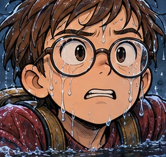
“Annie!” he whispered.
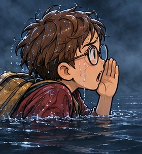
“What?”
“Swim faster!”
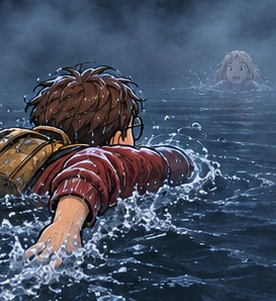
“But I’m here! I’m over here! Near the edge!” she whispered.
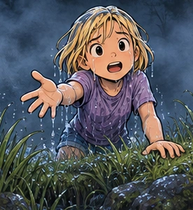
Jack swam through the dark toward her voice. He imagined a crocodile slithering after him.
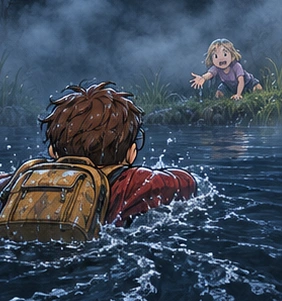
Another splash! Not far away!
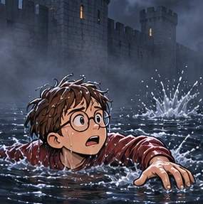
Jack’s hand touched a wet, live thing.
“Ahhhh!” he cried.
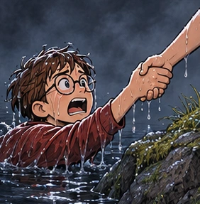
“It’s me! Take my hand!” said Annie.
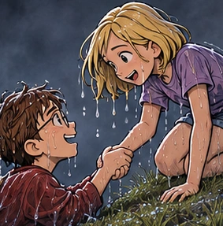
Jack grabbed her hand. She pulled him to the edge of the moat. They crawled over an embankment onto the wet grass.
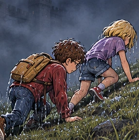
Safe!
Another splash came from the moat waters.
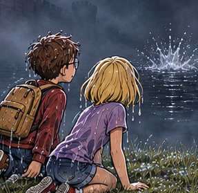
“Oh, man,” Jack said.
He was shivering all over. His teeth were chattering. He shook the water off his glasses and put them back on.
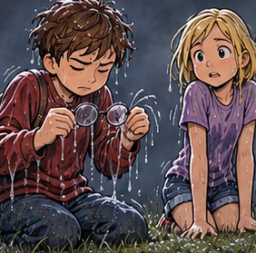
It was so misty he couldn’t see the castle. He couldn’t even see the moat, much less a crocodile.
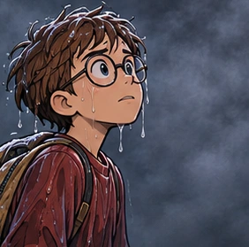
“We … we made it,” said Annie. Her teeth were chattering, too.
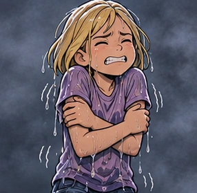
“I know,” said Jack. “But where are we?” He peered at the foggy darkness.
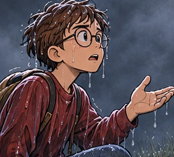
Where was the drawbridge? The windmill? The hawk house? The grove of trees? The tree house?
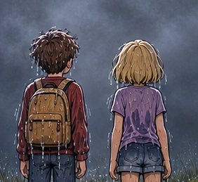
Everything had been swallowed up by the thick, soupy darkness.
Jack reached into his wet backpack and pulled out the flashlight. He pushed the switch. No more light.
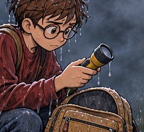
They were trapped. Not in a dungeon. But in the still, cold darkness.
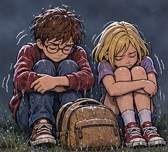
“Neeee-hhhh!”
A horse’s whinny.
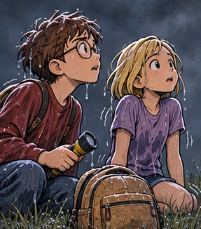
Just then the clouds parted. A full moon was shining in the sky. A pool of light spread through the mist.
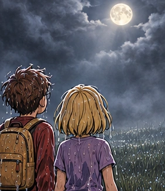
Then Jack and Annie saw him just a few feet away. The knight.
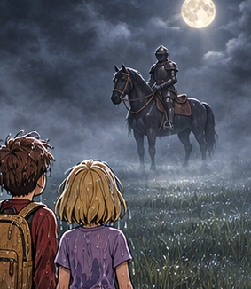
He sat on the black horse. His armor shone in the moonlight. A visor hid his face. But he seemed to be staring straight at Jack and Annie.
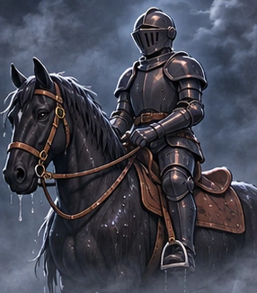